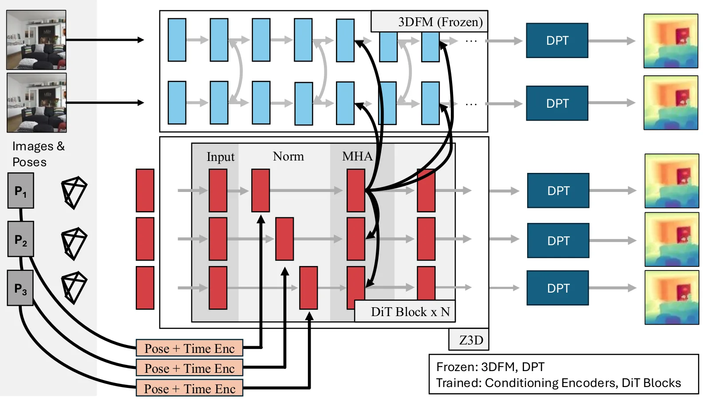
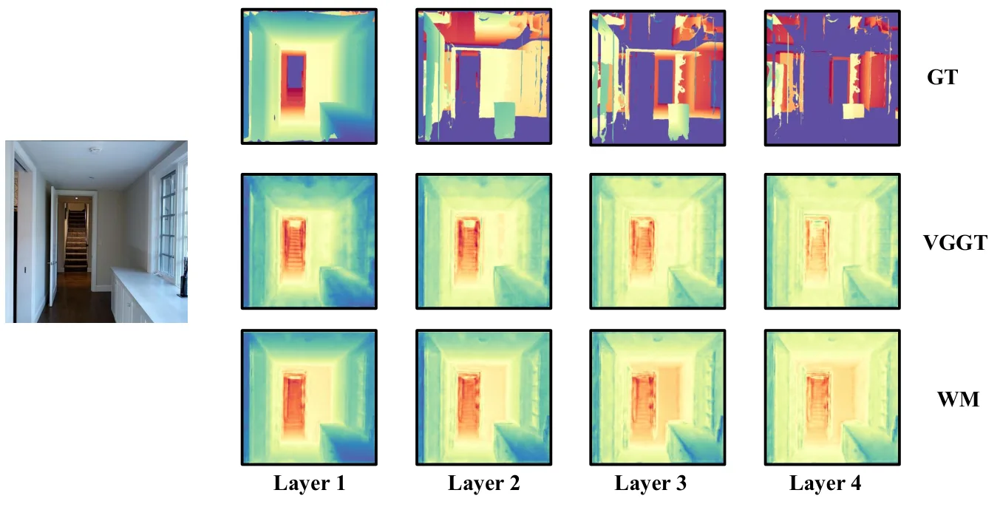
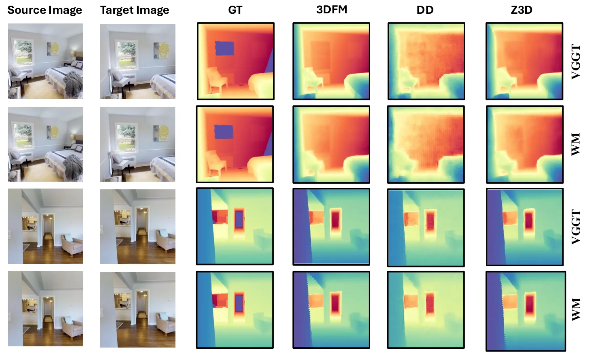
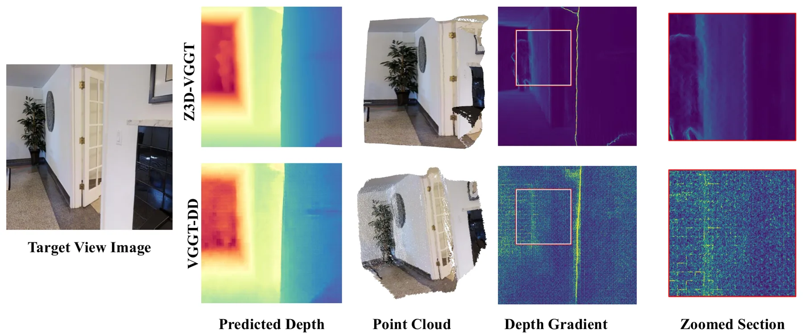
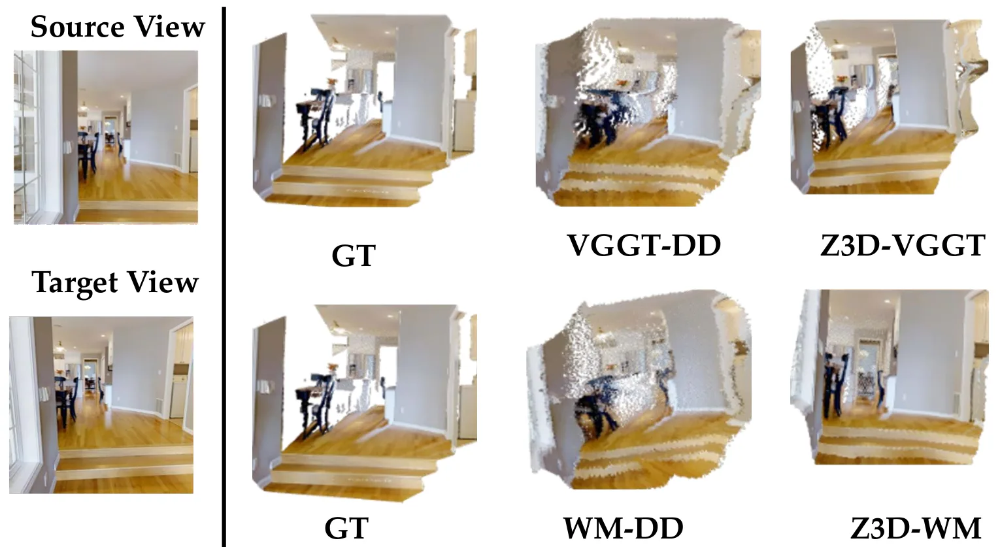
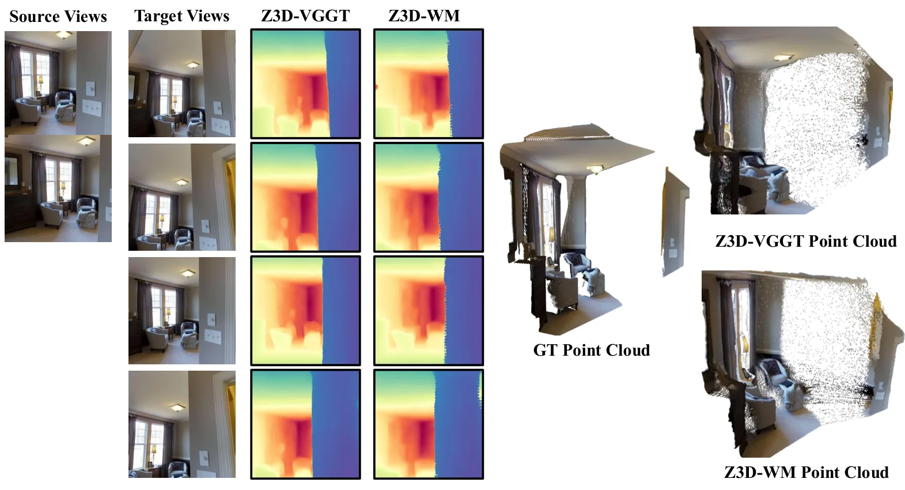

Z3D：利用 3D 基础模型表征进行零样本新视角深度合成Zero-Shot Novel Depth Synthesis Using 3D Foundation Models Scene Representations
S 级推荐；已查阅官方 arXiv HTML/PDF 与实验章节。
一句话工作总结
把 3DFM 的隐藏表征当作可解码的场景先验，用 latent diffusion 补全新视角深度，而不是只在可见视图做前馈重建。
完整单篇海报（待补全）
当前记录尚未达到完整海报质量门槛，暂不把摘要或评分理由冒充方法/实验结论。
待补字段：研究上下文.network（至少 2 条实质条目）。下一次任务需从论文全文或官方 HTML 提取证据后再发布。
摘要
Z3D 研究 3DFM 内部表征是否包含关于遮挡表面和场景结构的知识，并用 latent diffusion 在未观测视角预测 pointmaps。它在 DTU、7-Scenes 和 NRGBD 等数据上评估新视角深度及多视角几何。
3D Foundation Models (3DFMs) such as VGGT have recently pushed the boundaries of 3D vision by predicting rich unified representations with feed-foward transformers. The scene representations learned by these models enable strong performance on multiple 3D vision tasks. In this paper, we investigate using their internal representations to infer 3D in the scene from new views. Our hypothesis is that in order to solve the task of 3D reconstruction, these models need to learn a representation that includes a large amount of general knowledge about 3D scenes. After showing that it is possible to decode hidden surfaces from internal 3DFM representations, we propose a method, Z3D, that estimates pointmaps in unseen views by doing latent diffusion on 3DFM representation. We show that Z3D can predict realistic depth maps for new views across multiple datasets.
中文解读摘录
- 论文原文｜官方 HTML 精读｜score 11
- Z3D 用 3DFM 内部表征条件化 latent diffusion，预测未观测视角 pointmap/depth，再回投到点云进行几何评测。
- 官方表格中 out-of-domain depth 的 Z3D-VGGT 为 AbsRel 0.076、δ<1.25 0.935，VGGT-DD 为 0.098/0.914；LDI 表中 VGGT-LDI 为 0.197/0.717，WM-LDI 为 0.167/0.789。主要风险是合理外观不等于真实几何，需把生成置信度接入后端。
图表/页面预览
{kind=link}

{kind=link}

{kind=link}

{kind=link}

{kind=link}

{kind=link}
